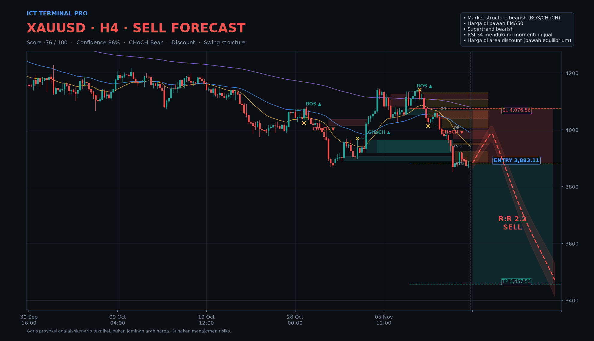
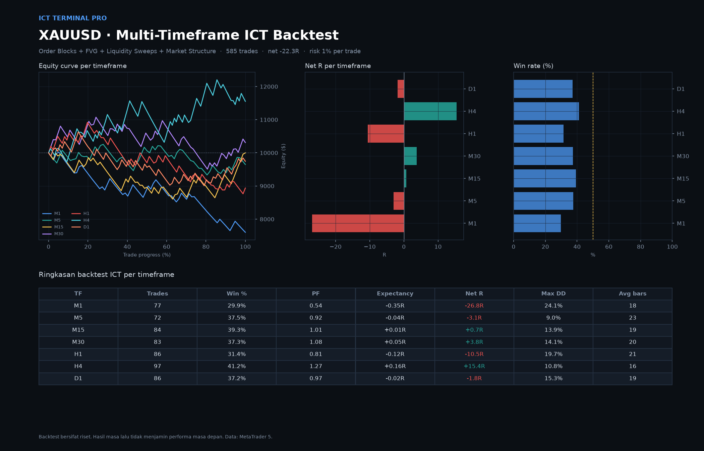
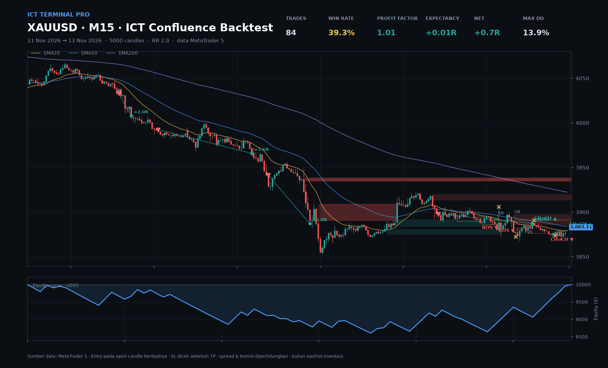

Terminal Analisis Pasar & Eksekusi Canggih Multi-Timeframe MT5
Kombinasi sempurna logika institusional Smart Money Concepts (ICT), deteksi Order Block & Fair Value Gap otomatis, sinyal konfluensi 7 Timeframe serentak, serta Order Box interaktif ala TradingView. Cukup unduh langsung aplikasinya dari file manager tanpa perlu database atau server yang rumit!

Semua Kebutuhan Trader Profesional dalam Satu Terminal
Dibangun dengan efisiensi tingkat tinggi tanpa beban database server. Semua kalkulasi market structure, indikator, dan sinyal dieksekusi secara instan di mesin lokal Anda.
Live 7 Timeframe Charting
Pantau pergerakan pasar serentak dari M1, M5, M15, M30, H1, H4 hingga D1 secara instan dengan engine PyQt6 & pyqtgraph berkecepatan tinggi tanpa freeze.
ICT & Smart Money Overlays
Otomatis mendeteksi Order Block (Demand/Supply), Fair Value Gap (FVG), Break of Structure (BOS), CHoCH, Liquidity Sweeps, dan Equal High/Low.
Order Box TradingView-Style
Buat kotak posisi Long atau Short langsung di chart. Geser (drag) garis Entry, Stop Loss, dan Take Profit secara visual untuk menghitung Risk/Reward presisi.
Auto Forecasting Scenario
Proyeksi skenario harga otomatis dari Entry menuju Retest hingga Target keuntungan lengkap dengan uncertainty cone berbasis volatilitas ATR terkini.
Auto Trade MT5 Multi-Symbol
Eksekusi order otomatis ke terminal MT5 dengan proteksi ketat: batas risiko global 0.5%/trade, max DD protection 4%, serta filter jam sesi London & New York (Killzone).
Tanpa Beban Database Server
Tidak membutuhkan install MySQL, PostgreSQL, atau langganan cloud. Semua data candle ditarik langsung dari MT5 lokal dan tersimpan di file manager Anda.
Pilar Analisis Algoritma Smart Money (ICT)
Deteksi level likuiditas institusional dengan rumus matematika presisi.
Demand & Supply Institusi
Menandai area candle terakhir sebelum pergerakan impulsif institusional dengan kotak transparan di chart.
Ketidakseimbangan Harga
Mendeteksi imbalance 3-candle yang sering menjadi magnet penarikan harga untuk retest sebelum melanjutkan tren.
Struktur & Perubahan Tren
Identifikasi otomatis Break of Structure untuk continuation dan Change of Character untuk sinyal reversal awal.
Pembersihan Stop Loss
Mendeteksi false breakout di area Equal Highs (EQH) atau Equal Lows (EQL) sebelum pergerakan besar dimulai.
Menu Tampilan Aplikasi
Dirancang dengan tema dark cyber berstandar terminal finansial global: tajam, informatif, dan responsif tanpa distraksi.
Terminal Utama: Analisis Real-Time Tanpa Hambatan
Tampilan kerja utama trader menyajikan candlestick resolusi tinggi yang terhubung langsung ke MetaTrader 5. Setiap formasi candle dievaluasi secara simultan dengan struktur ICT.
- Tabel Sinyal 7 TF: Skor konfluensi (-100 hingga +100) dengan indikasi status BUY, SELL, atau WAIT.
- Trade Plan Otomatis: Kalkulasi instan rekomendasi Entry, Stop Loss, Take Profit, dan rasio R:R berdasarkan struktur harga valid.
- Overlay Dinamis: Tombol toggle cepat untuk menampilkan/menyembunyikan EMA 20/50/200, FVG, Order Block, dan Liquidity lines.

Dashboard Live 7 Timeframe
Tidak perlu lagi berpindah-pindah chart secara manual. Tab Dashboard 7 TF menyajikan 7 mini-chart hidup (M1, M5, M15, M30, H1, H4, D1) secara berdampingan tanpa mengorbankan performa sistem.
- 1-Click Navigation: Cukup klik salah satu mini-chart untuk langsung berpindah ke timeframe tersebut di chart utama.
- Zero Lag Canvas: Dirender menggunakan native vector graphics tanpa kompresi gambar blur.
- Export Otomatis: Gambar snapshot kondisi 7 TF otomatis dapat diekspor ke folder file manager Anda.

Auto Forecast & Interactive Order Box
Visualisasikan perencanaan perdagangan sebelum masuk ke pasar dengan presisi tinggi layaknya fitur premium TradingView.
- Interactive Draggable Lines: Tarik dan geser garis Entry, SL, dan TP secara langsung menggunakan mouse di atas chart.
- Uncertainty Cone: Model proyeksi matematis yang menunjukkan estimasi variansi harga seiring berjalannya waktu.
- Multi-Scenario: Pilihan skenario Entry langsung atau skenario retest mitigasi Order Block.

Matriks Konfluensi Multi-Timeframe
Jangan pernah trading melawan arus tren besar! Matriks konfluensi merangkum arah bias dari Timeframe Tinggi (H4 & D1) hingga Timeframe Eksekusi (M1, M5, M15).
- Skor Agregat Otomatis: Nilai komposit dari gabungan 7 timeframe dengan bobot terukur.
- Filter Noise Pasar: Menolak sinyal palsu jika timeframe besar berada dalam fase konsolidasi atau berlawanan arah.
- Keterangan Logika: Menampilkan alasan logis di balik setiap sinyal (misal: "Bullish FVG retest + CHoCH M15").

Engine Backtest Teruji dengan Laporan Gambar
Uji strategi ICT pada data ribuan candle historis MT5 dengan simulasi realistis spread dan komisi. Dilengkapi kurva ekuitas dan penanda trade di setiap candle.
- Statistik Lengkap: Win rate, Total Trades, Net Profit, Profit Factor, Maksimum Drawdown, dan R:R rata-rata.
- Export Gambar Otomatis: Sekali klik, aplikasi merender grafik laporan beresolusi tinggi langsung ke folder file manager Anda.
- Export ke Excel (.xlsx): Riwayat transaksi rinci dapat diekspor untuk analisis audit mendalam.
Bukti Nyata Backtest Metode ICT
Hasil pengujian event-driven langsung pada instrumen Gold (XAUUSD) di berbagai timeframe dengan aturan money management yang disiplin.
Scalping & Day Trading
Optimal untuk capture pergerakan sesi London dan New York Open.
Intraday Swing Setup
Konfirmasi break of structure yang kokoh dengan rasio Risk/Reward tinggi.
Major Market Trend
Menentukan bias arah pergerakan mingguan institusional.
Daily Liquidity Pool
Deteksi Buy-Side & Sell-Side Liquidity jangka panjang.
Kalkulator Money Management Otomatis
Lihat bagaimana algoritma perlindungan risiko ICT Terminal Pro menghitung ukuran lot yang aman secara otomatis.
Download Langsung dari File Manager
Tidak memerlukan akun server, pendaftaran database, ataupun konfigurasi backend. Semua file distribusi siap pakai dapat langsung dibuka di PC/laptop Anda.
Paket Native Win64 (ZIP)
Paket all-in-one paling praktis: Memuat aplikasi native cepat, batch unlocker otomatis, panduan lengkap PDF, dan template laporan.
-
Termasuk
ICT-Terminal-Pro-2.0.4.exe -
Script
Buka_Aplikasi.bat(Bypass SmartScreen) - Buku Panduan PDF Bahasa Indonesia & English
- Surat Pernyataan Keaslian EA untuk Prop Firm
Single Executable (.EXE)
Satu file tunggal yang dapat langsung dijalankan tanpa perlu proses instalasi (zero-installation).
- Bisa ditaruh di Flashdisk / USB Drive
- Langsung terhubung dengan MT5 yang aktif
- Mode Demo jika MT5 belum tersambung
Buku Panduan PDF Lengkap
Ebook tutorial 60+ halaman mengajarkan cara membaca sinyal, mengatur bot auto trade, dan strategi ICT step-by-step.
- Panduan instalasi & koneksi MT5
- Glosarium konsep Smart Money (ICT)
- Tips lolos evaluasi Prop Firm
Download Langsung via Terminal (PowerShell / CMD)
Salin dan jalankan perintah 1-baris ini di PowerShell untuk mengunduh rilis resmi langsung dari GitHub.
curl.exe -L -o ICT-Terminal-Pro-2.0.4-native-win64.zip "https://github.com/khafienew-hub/ict-terminal-pro/releases/download/v2.0.4/ICT-Terminal-Pro-2.0.4-native-win64.zip" ; Expand-Archive ICT-Terminal-Pro-2.0.4-native-win64.zip -DestinationPath ICT-Terminal -Force ; Get-ChildItem ICT-Terminal -Recurse | Unblock-File ; echo "Download Selesai! Buka folder ICT-Terminal"curl.exe -L -o ICT-Terminal-Pro-2.0.4.exe "https://github.com/khafienew-hub/ict-terminal-pro/releases/download/v2.0.4/ICT-Terminal-Pro-2.0.4.exe" ; Unblock-File ICT-Terminal-Pro-2.0.4.exe ; echo "Download Selesai! Jalankan ICT-Terminal-Pro-2.0.4.exe"D:\Python\mt5_indikator\distPanduan 4 Langkah Menjalankan Aplikasi di Komputer Anda
Unduh file ICT-Terminal-Pro-2.0.4-win64.zip, lalu ekstrak ke folder di PC Anda (misalnya di drive D:\ICT-Terminal).
Jalankan aplikasi MetaTrader 5 Anda (bisa akun demo atau real), login, dan pastikan koneksi broker berstatus hijau/aktif.
Klik 2x Buka_Aplikasi.bat (otomatis melepas proteksi Windows) atau langsung buka ICT-Terminal-Pro-2.0.4.exe.
Pilih pair (mis. XAUUSD), lihat sinyal konfluensi 7 TF, buat order box, dan nikmati masa uji coba PRO Trial Gratis 30 Hari.
Skema Edisi & Uji Coba Transparan
Setiap komputer baru otomatis mendapatkan masa percobaan total 30 hari tanpa perlu memasukkan kartu kredit.
Masa Trial 30 Hari
Otomatis aktif begitu aplikasi pertama kali dibuka di laptop Anda.
- Hari 1 - 7 (TRIAL PRO): Semua fitur PRO aktif tanpa batas.
- Hari 8 - 30 (STANDARD): Auto trade berjalan pada preset aman teruji.
- Hari 31+ (FREE FOREVER): Charting, Sinyal 7 TF, & Backtest tetap GRATIS selamanya!
Edisi PRO Lifetime
Buka kunci penuh kontrol Auto Trade, multi-pair tak terbatas, dan dukungan personal.
- Auto Trade aktif tanpa batas waktu
- Bebas atur Risk per trade (0.1% s/d 5%)
- Trading simultan hingga 12 pair sekaligus
- Integrasi Bot Telegram Real-Time Alerts
- Update pembaruan algoritma gratis
Pertanyaan yang Sering Diajukan (FAQ)
Segala hal yang perlu Anda ketahui mengenai spesifikasi, instalasi, dan cara kerja ICT Terminal Pro.
ICT Terminal Pro adalah aplikasi desktop mandiri (Windows) yang menghubungkan analisis komprehensif 7 Timeframe serentak dengan antarmuka modern layaknya Bloomberg Terminal atau TradingView.
Berbeda dengan file custom indicator .ex5 biasa yang sering membuat MetaTrader 5 berat dan crash, ICT Terminal Pro berjalan di proses terpisah dengan komputasi multi-core, memberikan grafik yang sangat halus (smooth), deteksi Order Block & Fair Value Gap otomatis, visual order box interaktif, serta bot auto trade terintegrasi.
Aplikasi ini dirancang dengan prinsip zero-friction standalone. Anda tidak perlu menyewa server MySQL, PostgreSQL, ataupun membayar hosting database bulanan.
Data candle ditarik secara real-time langsung melalui API lokal MetaTrader 5 di komputer Anda. Riwayat laporan backtest, gambar forecast, dan data trade otomatis disimpan dalam format file biasa (PNG, Excel XLSX, JSON cache) di folder lokal Anda sehingga privasi akun 100% aman di tangan Anda.
Sangat mudah! Anda cukup klik tombol Unduh Paket ZIP di menu Download di atas. Setelah selesai terunduh di file manager komputer Anda:
- Buka folder Download di file manager, lalu klik kanan > Extract All...
- Buka aplikasi MetaTrader 5 Anda dan biarkan login.
- Di dalam folder hasil ekstrak, klik dua kali file
Buka_Aplikasi.batatauICT-Terminal-Pro-2.0.4.exe.
Aplikasi akan langsung terbuka dan mendeteksi akun MT5 Anda secara otomatis!
Ini adalah hal yang wajar di Windows untuk file .exe baru yang diunduh dari internet (dikenal sebagai sistem Mark of the Web / SmartScreen). Ini bukan virus dan bukan file rusak.
Cara mengatasinya:
- Cara 1 (Paling Mudah): Cukup jalankan file
Buka_Aplikasi.batyang ada di dalam paket zip. Script ini otomatis melepas cap blokir Windows dan langsung meluncurkan aplikasi. - Cara 2 (Manual): Pada jendela SmartScreen, klik link "More info" (Info selengkapnya), lalu klik tombol "Run anyway" (Tetap jalankan).
Sangat Aman! Algoritma Auto Trade ICT Terminal Pro dirancang khusus mematuhi aturan ketat evaluasi Prop Firm:
- Bukan latency arbitrage, bukan HFT tick scalping, dan bukan news spike scalping.
- Menerapkan proteksi hard drawdown maksimum 4% dan batas risiko per trade hanya 0.5%.
- Setiap order wajib disertai Stop Loss dan Take Profit berbasis struktur market institusi.
- Dilengkapi dokumen Surat Pernyataan Bukti Keaslian & Kepemilikan EA resmi untuk dilampirkan jika broker atau prop firm meminta verifikasi.
Semua instrumen yang tersedia di broker MetaTrader 5 Anda didukung penuh, antara lain:
- Komoditas: XAUUSD (Gold), XAGUSD (Silver), US Oil / Brent.
- Forex: EURUSD, GBPUSD, USDJPY, AUDUSD, GBPJPY, USDCAD, dll.
- Indeks Saham: US100 (Nasdaq), US500 (S&P500), US30 (Dow Jones), DAX40.
- Kripto: BTCUSD, ETHUSD (bila disediakan oleh broker MT5 Anda).
ICT Terminal Pro dirancang sangat ringan:
- Sistem Operasi: Windows 10 atau Windows 11 (64-bit).
- Prosesor: Intel Core i3 / AMD Ryzen 3 atau setara (minimum 2 core).
- RAM: Minimal 4 GB (disarankan 8 GB ke atas).
- Penyimpanan: Sisa ruang 300 MB di harddisk / SSD.
- Perangkat Lunak Pendukung: MetaTrader 5 (MT5) Desktop sudah terinstal.
Setelah 30 hari masa trial, fitur charting, sinyal 7 TF, dan backtest tetap dapat Anda nikmati secara GRATIS selamanya!
Bila Anda ingin mengaktifkan kembali bot Auto Trade dan membuka akses kontrol parameter penuh, Anda cukup menyalin Hardware ID (Kunci Mesin) yang tampil di dialog lisensi aplikasi, lalu kirimkan ke admin WhatsApp resmi di nomor 0812-2578-0898. Lisensi Anda akan langsung diaktifkan secara instan!